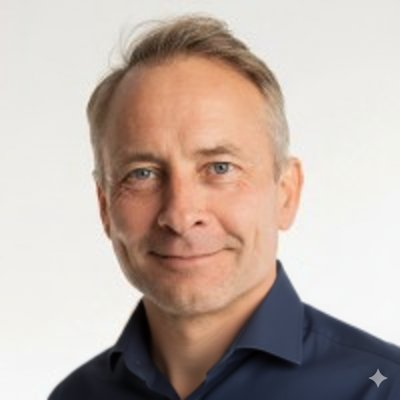

Fra interview til forbedringsplan på under en time. From interview to improvement plan in under an hour.
Ailean interviewer den, der kender processen, tegner svarene som et BPMN-diagram, foreslår forbedringer og lægger en projektplan.
Ailean interviews the person who knows the process, draws the answers as a BPMN diagram, suggests improvements and drafts a project plan.
Din første proces er gratis. Intet kreditkort.Your first process is free. No credit card.
Se hele forløbet på godt to minutterSee the whole flow in just over two minutes
Tre fagpersoner beskriver den samme proces. Ailean viser, hvor de er uenige, og fører den aftalte proces videre til forbedringer, plan og en playbook til Amazon Quick.
Three subject-matter experts describe the same process. Ailean shows where they disagree and takes the agreed process on to improvements, a plan and a playbook for Amazon Quick.
Fem trin, én arbejdsgangFive steps in one sitting
Du går fra en mundtlig beskrivelse til et projekt, der kan sættes i gang, uden at skifte værktøj undervejs.
You go from a spoken description to a project that is ready to start, without changing tools along the way.
- 1
BeskrivDescribe
Lad Ailean interviewe procesejeren med opfølgende spørgsmål om undtagelser. Du kan også optage selv eller indsætte en transskription.
Let Ailean interview the process owner, with follow-up questions about exceptions. You can also record it yourself or paste a transcript.
- 2
GennemseReview
Svarene bliver til navn, afgrænsning, roller, trin, undtagelser og kendte problemer. Ret det, der er forkert, før diagrammet tegnes.
The answers become a name, scope, roles, steps, exceptions and known issues. Correct anything that is wrong before the diagram is drawn.
- 3
Diagram
Ailean tegner AS-IS som BPMN 2.0 med svømmebaner og beslutningspunkter. Diagrammet kan redigeres og hentes som XML.
Ailean draws the AS-IS as BPMN 2.0 with swimlanes and decision points. You can edit the diagram and download it as XML.
- 4
ForbedrImprove
Du får forbedringsforslag med vurderet indsats og effekt. Vælg dem, du tror på, og Ailean tegner TO-BE-processen.
You get improvement suggestions scored for effort and impact. Pick the ones you believe in and Ailean draws the TO-BE process.
- 5
PlanlægPlan
De valgte forbedringer bliver til en projektplan med leverancer og risici, som åbnes på en projekttavle. Porteføljen viser alle dine processer samlet.
The selected improvements become a project plan with deliverables and risks, opened on a project board. The portfolio shows all your processes in one place.

Jeres processer er forretningshemmelighederYour processes are business secrets
Sådan behandler Ailean det, I fortæller.
This is how Ailean handles what you tell it.
Ingen træning på jeres dataNo training on your data
Ailean bruger Anthropics Claude via API. Anthropic bruger ikke data sendt via API'et til at træne sine modeller.
Ailean uses Anthropic's Claude through the API. Anthropic does not use data sent through the API to train its models.
Stemme er et valgVoice is optional
Det talte interview håndteres af ElevenLabs. I kan også skrive eller indsætte beskrivelsen, så der ikke sendes lyd.
The spoken interview is handled by ElevenLabs. You can also type or paste the description, so no audio is sent.
I ejer resultatetYou own the result
Diagrammer kan hentes som standard BPMN 2.0 XML og åbnes i den BPM-platform, I allerede bruger.
Diagrams download as standard BPMN 2.0 XML and open in the BPM platform you already use.
Vi indgår databehandleraftale efter GDPR artikel 28.We sign a data processing agreement under GDPR Article 28. Læs aftalenRead the agreement
Må jeres procesdata ikke forlade huset?Must your process data stay in-house? Vi har også en lokal løsningWe also have a local setup
Det samme arbejde, målt på tidThe same work, measured in time
| Traditionelt forløbTraditional engagement | Ailean | |
|---|---|---|
| Fra interview til planInterview to plan | 6–12 uger6–12 weeks | Under en timeLess than an hour |
| DokumentationDocumentation | Skrives i hånden efter workshoppenWritten by hand after the workshop | BPMN 2.0 og analyse laves automatiskBPMN 2.0 and analysis produced automatically |
| OpfølgningFollow-up | Excel eller et generelt projektværktøjExcel or a general project tool | Projekttavle bygget til lean-projekterA project board built for lean projects |
| VidenKnowledge | Forsvinder, når konsulenten gårLeaves with the consultant | Bliver i jeres procesporteføljeStays in your process portfolio |
| PrisPrice | TimeprisHourly rate | Fast månedsprisFixed monthly price |

Bygget af en lean-praktiker, ikke et AI-firmaBuilt by a lean practitioner, not an AI company
Ailean er udviklet af Kristian Steen, Lean Six Sigma Black Belt med mere end 20 års erfaring med procesforbedring og digital transformation fra blandt andet Maersk, Danske Bank, Ørsted og Siemens.
Ailean is built by Kristian Steen, a Lean Six Sigma Black Belt with more than 20 years of experience in process improvement and digital transformation, including at Maersk, Danske Bank, Ørsted and Siemens.
- Har bygget proces-taksonomier for Danske Bank og MaerskBuilt process taxonomies for Danske Bank and Maersk
- Har undervist i Lean Six Sigma på IT-UniversitetetTaught Lean Six Sigma at the IT University of Copenhagen
- Forfatter til bogen om Lean og Six Sigma, Perfect processesAuthor of the book on Lean and Six Sigma, Perfect processes
Start gratis. Betal, når det giver værdi.Start free. Pay when it pays off.
Kortlæg din første proces i dagMap your first process today
Din første proces er gratis. Du skal ikke installere noget og ikke bruge kreditkort.
Your first process is free. There is nothing to install and no credit card needed.
Ikke klar endnu?Not ready yet? Hent whitepaper og bog gratisGet the white paper and book free